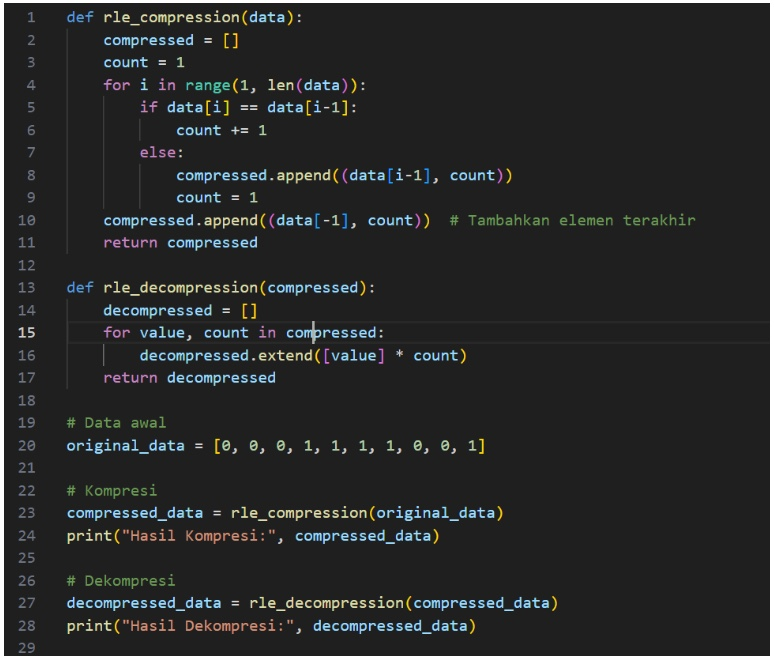
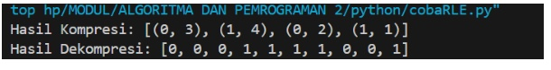
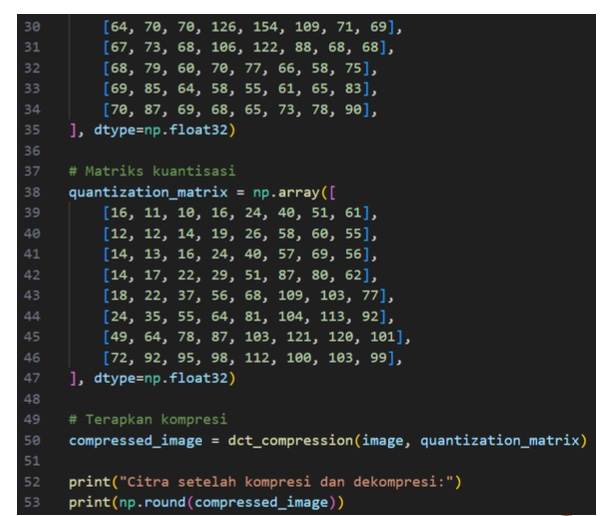
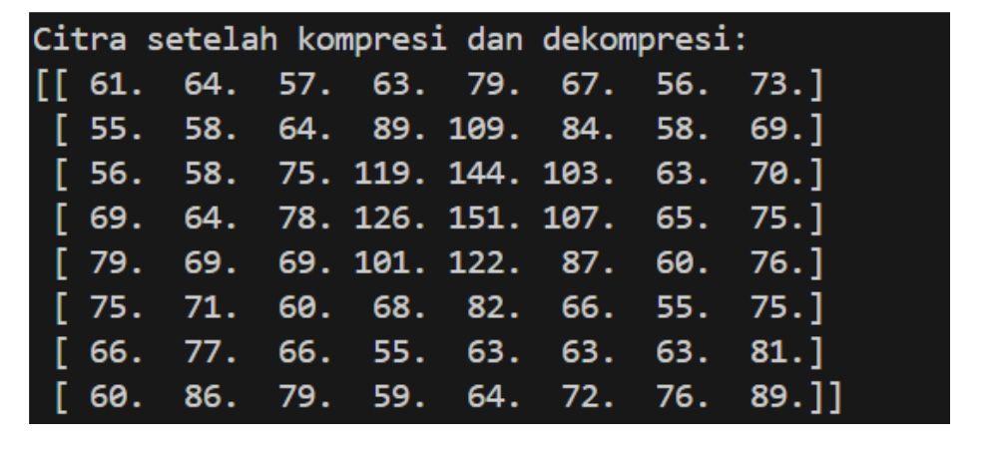

Pertemuan 11: PEMAMPATAN CITRA (IMAGE COMPRESSION)
Materi ini membahas Pemampatan Citra dalam Pengolahan Citra Digital
Sub-Topik:
- Pemampatan Citra
- Run-Length Encoding (RLE)
- Lossy Compression Dengan DCT
Pemampatan Citra
Pemampatan citra adalah proses mengurangi ukuran data dari sebuah citra digital tanpa menghilangkan atau dengan mengurangi kualitas informasi visual yang penting. Tujuan dari pemampatan citra adalah untuk menghemat ruang penyimpanan dan mempercepat pengiriman data melalui jaringan.
Jenis-jenis Pemampatan Citra
- PLossless Compression (Tanpa Kehilangan Data): Tidak ada informasi citra yang hilang setelah proses dekompresi. Citra hasil dekompresi identik dengan citra asli. Contoh algoritma: Huffman Coding, Run-Length Encoding (RLE), LZW (Lempel-Ziv-Welch), PNG
- Lossy Compression (Dengan Kehilangan Data): Beberapa informasi citra hilang selama proses kompresi. Menghasilkan ukuran file yang jauh lebih kecil, tetapi kualitas citra bisa berkurang. Cocok untuk aplikasi yang tidak memerlukan detail tinggi, seperti foto atau video. Contoh algoritma: JPEG (Joint Photographic Experts Group), Transformasi DCT (Discrete Cosine Transform), Wavelet Compression
Run-Length Encoding (RLE)
RLE adalah teknik lossless yang menggantikan data dengan panjang urutannya. Misalnya, dalam citra biner:
Citra asli (1D array):
[0, 0, 0, 1, 1, 1, 1, 0, 0, 1]
Langkah-langkah kompresi RLE:Hitung jumlah elemen berurutan dengan nilai yang sama. Simpan pasangan (nilai, jumlah).
kompresi:
[(0, 3), (1, 4), (0, 2), (1, 1)]
Contoh Penerapannya Pada Program
Gambar 11.1: Kode Implementasi RLE
Gambar 11.2: Output Implementasi RLE
Lossy Compression Dengan DCT
DCT digunakan dalam kompresi gambar, seperti format JPEG, karena kemampuannya untuk memisahkan informasi penting dari detail kecil (frekuensi tinggi).
Contoh Penerapannya Pada Program

Gambar 11.3: Kode Implementasi DCT
Gambar 11.4: Kode Implementasi DCT
Gambar 11.5: Output Implementasi DCT